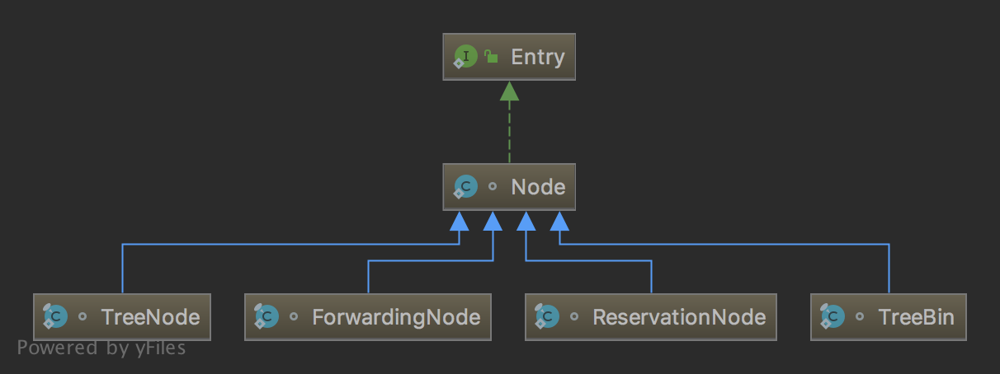

##
Concurrenthashmap
API
Constant
1 | static final int MOVED = -1; // hash for forwarding nodes |
相当于 HashMap 的 threshold，构造函数中与 loadFactor 无关，只有真正初始化的时候才会变成 capacity * loadFactor.
1 | // table 初始化和扩容的标志位，非常重要 |
说白了，sizeCtl 在扩容时有两部分组成，int 类型一共32位，高16位为rs，通过resizeStamp()保证最高位一定是1，因此扩容时 sizeCtl 是一个负数；而低16位是扩容线程数 + 1.扩容时，首个线程将 sizeCtl 设置成 (resizeStamp(table.length) << RESIZE_STAMP_SHIFT) + 2（见addCount()函数），即高16位为rs，低16位为线程数 1+1=2.
举个例子：
1 | // table size = 1024，前面21个0 |
1 | // 扩容时每个线程的最小步长，即每个线程至少操作16个bin |
1 | // 前面有几个0 | 10000000 00000000，保证最高位必是1 |
NODE
Node 用于存储单个KV数据节点，内部有key、value、hash、next等属性，它有4个子类，继承关系如下：

TreeBin：并不存储实际数据，维护对桶内红黑树的读写锁，存储对红黑树节点的引用。
TreeNode：在红黑树结构中，实际存储数据的节点
ForwardingNode：扩容转发节点，放置此节点后，外部对原有table的操作会转发到nextTable上
ReservationNode：占位加锁节点，执行某些方法时，对其加锁，如computeIfAbsent
GET
1 | public V get(Object key) { |
PUT
1 | /** |
与 HashMap 的 hash() 方法基本一致，唯一不同是强制最高位为0.
1 | // key hash 算法，异或，HASH_BITS为31个1 |
ConcurrentHashMap 只是在构造函数中使用 threshold，并且只影响初始容量，后面的扩容是按照 n - (n >>> 2) 计算的。
1 | /** |
协助扩容。
1 | /** |
1 | /** |
1 | private final void addCount(long x, int check) { |
1 | /** |
1 | public int size() { |
1 | /** |
1 | final long sumCount() { |
1 | // See LongAdder version for explanation |